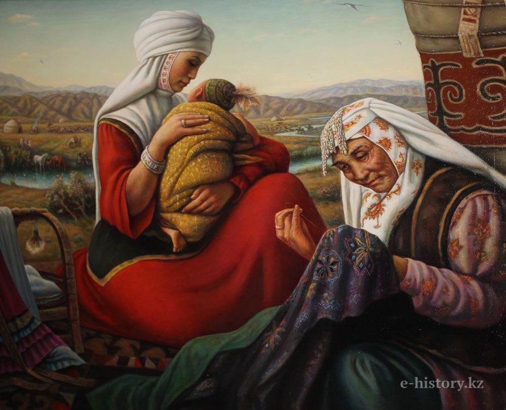

Kamil Mullashev

Details:
b. 1944, Kazakhstan, Semey

Kamil Mullashev, Reflection, 1974, 180 cm x 130 cm, Oil on Canvas.
Kamil Mullashev: Renowned for His Unique Fusion of Realism and Mysticism
Kamil Mullashev is widely celebrated for his intricate portrayal of human emotions and Kazakhstan’s cultural identity, often blending realism with mystical elements. His works resonate with the deep spiritual connection between humans and the natural world, invoking themes of reflection and introspection.
His use of light and shadow creates atmospheric pieces that bridge reality and fantasy.